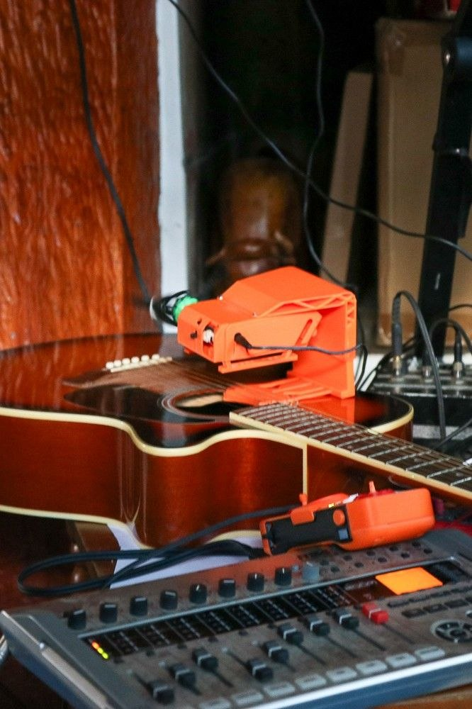

Harmonic Beacon Retreat
Una inmersión de tres días para reorganizar tu percepción a través de la resonancia armónica, la proyección del mito personal y la escala viva de la naturaleza.
A three-day immersion to reorganize your perception through harmonic resonance, personal myth projection and the living scale of nature.
Fechas flexiblesFlexible dates | Playa Hermosa, Costa Rica
Descubrir la experienciaDiscover the experienceLa experiencia
The experience
Durante tres días en el corazón de Costa Rica, vas a experimentar el Harmonic Beacon en su forma más pura: sesiones de profunda resonancia armónica, proyección del mito personal, yoga, caminatas contemplativas, espacios grupales de reflexión, ciencias corporales y estados de meditación profunda — todo en un entorno natural de extraordinaria belleza.
For three days in the heart of Costa Rica, you will experience the Harmonic Beacon in its purest form: sessions of deep harmonic resonance, personal myth projection, yoga, contemplative walks, group reflection spaces, body sciences and states of deep meditation — all within a natural environment of extraordinary beauty.
Sesiones con el Harmonic Beacon para sincronizar tu sistema nervioso a través de las proporciones naturales. Un campo sostenido que actúa como referencia armónica externa.
Sessions with the Harmonic Beacon to synchronize your nervous system through natural proportions. A sustained field that acts as an external harmonic reference.
Técnica clínica de autoconocimiento profundo potenciada por el Beacon. Accede al Sí-Mismo a través de la imaginación activa, atraviesa la Sombra e integra material simbólico.
A clinical technique for deep self-knowledge empowered by the Beacon. Access your Self through active imagination, traverse the Shadow and integrate symbolic material.
Práctica matutina de yoga con vista al océano, caminatas contemplativas, círculos grupales de reflexión y ciencias corporales para integrar cuerpo y entorno.
Morning yoga practice with ocean views, contemplative beach walks, group reflection circles and body sciences to integrate body and environment.
El campo del Beacon
The Beacon field
Un campo del Beacon compuesto por una escala armónica natural basada en la afinación de la naturaleza. Proporciona un espacio de imaginación, presencia y conexión con ciencias corporales que ayuda a mejorar los estados de meditación, acompañar procesos de viajes interiores y elevar estados de conciencia.
A Beacon field composed of a natural harmonic scale based on the tuning of nature. It provides a space of imagination, presence and connection with body sciences that helps improve meditation states, accompany inner journey processes and elevate states of consciousness.
Acompañado de la proyección del mito, permite a sus usuarios atravesar resistencias en sus estados subconscientes más profundos a través de la imaginación activa presente, pudiendo visualizar estas resistencias como si fuese un sueño. Al no tener una guía específica al punto de convencimiento de ninguna religión o fantasía gurú, cada persona puede encontrar su propio camino y su propio estado reflexivo y meditativo presente.
Accompanied by myth projection, it allows users to traverse resistances in their deepest subconscious states through present active imagination, being able to visualize these resistances as if it were a dream. Without having a specific guide to the point of conviction of any religion or guru fantasy, each person can find their own path and their own reflective and meditative present state.

Personas habitando el campo del Beacon.
People inhabiting the Beacon field.
Modalidades
Pathways
Ambas modalidades incluyen acompañamiento integral del equipo y acceso al espacio wellness para mayor comodidad durante la experiencia.
Both pathways include full team support and access to the wellness space for maximum comfort during the experience.
Autoconocimiento, wellness, meditación y armonía. Solo disfrutar la experiencia sin protocolos de investigación.
Self-knowledge, wellness, meditation and harmony. Simply enjoy the experience without research protocols.
Te sumás al protocolo de investigación de los efectos del Beacon. Monitoreo con EEG y otros elementos de medición durante tu paso por la experiencia.
Join the Beacon research protocol. EEG monitoring and other measurement elements during your journey.
Protocolo
Protocol
En el retiro preparamos cada condición para que solo tengas que estar presente. Esto es lo que ponemos de nuestra parte en cada experiencia.
At the retreat we prepare every condition so that all you have to do is be present. This is what we bring to each experience.
Beacon en vivo con un buen equipo de sonido, en un lugar pensado para esta experiencia. Garantizamos una escucha sostenida e inmersiva, sin que tengas que preocuparte por el audio.
Live Beacon with quality sound equipment, in a place designed for this experience. We guarantee sustained, immersive listening, with no audio to worry about.
Preparamos un lugar cómodo, sin interrupciones, con temperatura y postura cuidadas. El entorno, la atención y la comodidad corporal están atendidos durante toda la experiencia.
We prepare a comfortable place, free of interruptions, with temperature and posture taken care of. The environment, attention and bodily comfort are looked after throughout the experience.
Podés pausar, salir o permanecer en silencio en cualquier momento. Cuidamos cada salida: nunca es una falla, es parte de la experiencia.
You can pause, exit or remain silent at any moment. We care for every exit: it is never a failure, it is part of the experience.
Te acompañamos con honestidad: el Beacon es un dispositivo de bienestar y exploración, no un tratamiento médico. No prometemos curas milagrosas ni seguridad absoluta.
We accompany you with honesty: Beacon is a wellbeing and exploration device, not a medical treatment. We do not promise miraculous cures or absolute safety.
Te acompañamos de cerca durante la Proyección del Mito y el trabajo simbólico. Si emerge malestar, lo cerramos, cuidamos la salida y te orientamos.
We accompany you closely during Myth Projection and symbolic work. If discomfort emerges, we close it, care for the exit and guide you.
Sostenemos una práctica real y documentamos cada experiencia: aceptabilidad, seguridad operacional y criterios de progresión. Sos parte de una investigación situada y cuidada.
We hold a real practice and document each experience: acceptability, operational safety and progression criteria. You are part of a situated, careful research line.
La experiencia
The experience
Tres formas de habitar el retiro. La única diferencia es cuántos días te regalás.
Three ways to inhabit the retreat. The only difference is how many days you give yourself.
Una inmersión de sol a sol
A sunrise-to-sunset immersion
El tiempo justo para soltar del todo
Just enough time to fully let go
La travesía completa, sin reloj
The full journey, off the clock
Cupos limitados. Escribinos para conocer todos los detalles y reservar tu lugar.
Limited spots. Write to us for all the details and to reserve your place.
Itinerario
Itinerary
Una referencia de los tres días. Los horarios pueden ajustarse según el grupo y el clima.
A reference for the three days. Times may shift with the group and the weather.
14:00
Bienvenida y check-in
Welcome and check-in
16:00
Círculo de apertura
Opening circle
17:30
Caminata de grounding
Grounding walk
18:30
Sesión Beacon al atardecer
Beacon session at sunset
20:00
Cena comunitaria
Community dinner
21:30
Círculo de reflexión grupal
Group reflection circle
07:00
Yoga matutino
Morning yoga
08:30
Desayuno
Breakfast
10:00
Proyección del Mito Personal
Personal Myth Projection
12:30
Almuerzo
Lunch
14:00
Espacio de reflexión grupal
Group reflection space
16:00
Ciencias corporales
Body sciences
17:30
Labs: entrevistas
Labs: interviews
18:30
Segunda sesión Beacon
Second Beacon session
20:30
Cena y círculo de compartir
Dinner and sharing circle
07:00
Yoga de cierre
Closing yoga
08:30
Desayuno
Breakfast
10:00
Círculo de cierre
Closing circle
11:30
Caminata de despedida
Farewell walk
12:30
Check-out
Check-out
El lugar
The place
Un santuario natural donde la selva tropical se encuentra con el océano Pacífico. El centro wellness ofrece un entorno seguro, tranquilo y cuidado para sumergirte completamente en la experiencia Harmonic Beacon.
A natural sanctuary where tropical jungle meets the Pacific Ocean. The wellness center offers a safe, tranquil and cared-for environment to fully immerse yourself in the Harmonic Beacon experience.
Facilitadores
Facilitators
Creador de DaemonMetrix y la Harmonic Information Theory (HIT). Investigador y desarrollador de tecnologías de resonancia armónica para bienestar y exploración de la conciencia. Su trabajo integra rigor científico con profunda sensibilidad humana.
Creator of DaemonMetrix and Harmonic Information Theory (HIT). Researcher and developer of harmonic resonance technologies for wellbeing and consciousness exploration. His work integrates scientific rigor with deep human sensitivity.
Creador de la Proyección del Mito Personal, técnica clínica de autoconocimiento profundo con más de 16 años de desarrollo. Su trabajo integra la psicología de profundidad de Carl Jung, la narrativa mítica de Joseph Campbell y el psicodrama para facilitar procesos de individuación.
Creator of Personal Myth Projection, a clinical deep self-knowledge technique with more than 16 years of development. His work integrates Carl Jung's depth psychology, Joseph Campbell's mythic narrative and psychodrama to facilitate individuation processes.
Reservar
Reserve
Los lugares son limitados para cuidar la intimidad y la calidad de la experiencia. Escribinos y armamos tu lugar de forma personal — por WhatsApp o por email.
Spots are limited to protect the intimacy and quality of the experience. Write to us and we'll arrange your place personally — by WhatsApp or email.